library(tibble)
dat <- tibble(x=c(rep("A", 11),
rep("B", 5)),
y=rnorm(16))
save(dat, file="data/my-data.rda")A Modern Research Workflow with R and GitHub
Session 1: Reproducibility and collaboration with GitHub
Dianne Cook
Econometrics and Business Statistics
Monash University
Econometrics and Business Statistics
Monash University
2026-10-28
Welcome and overview
Plan for today
| Time | Topic |
|---|---|
| 0:00 | Welcome and overview |
| 0:15 | Reproducibility and collaboration with GitHub |
| 0:55 | Break |
| 1:00 | Publications and software |
| 1:55 | Break |
| 2:00 | AI in the research workflow |
| 2:30 | Data visualisation |
| 3:00 | Wrap-up |
| 3:15 | Finish |
🕰️ In this session, we will cover:
- Structuring a research project
- Git basics: commit, push, pull, handling merge conflicts
- Pull requests, issues and co-authors
I’m hoping that you can follow along with me! That way, you can do and practise what I’m talking about.
There are several short hands-on activities. Work with a partner for any or all of these.
Feel free to ask questions. 🙋🏾
Workshop philosophy
Materials are based on what I find useful in my daily work as an academic.
- The goal is to get us all up and running by the end of the workshop
- If you run into small (but critical) errors, they might need to be solved later
- Provide insight into how to implement this workflow
- Practise small examples, to check that you can work this way
- After the workshop, to retain what you’ve learned you’ll need to practise, practise, practise!
Illustration of the toolbox
Working with graduate students
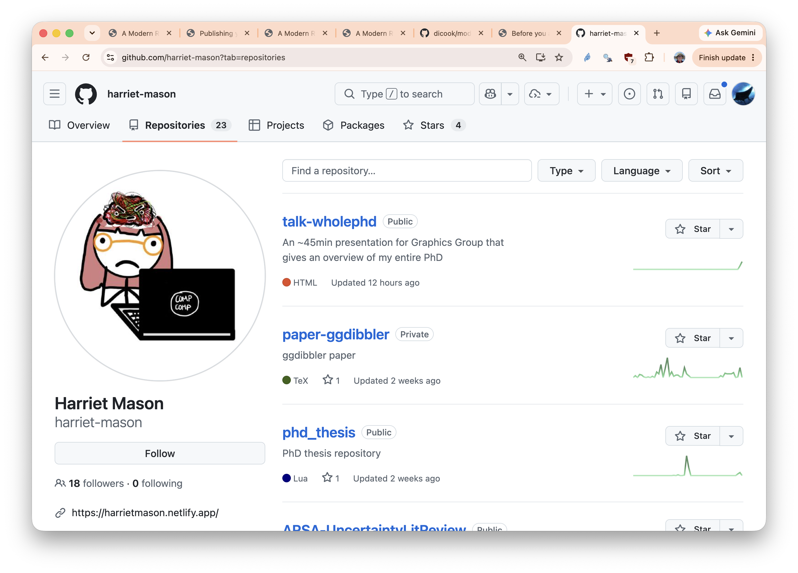
- Student creates GitHub repo for particular projects
- Initially private, with access for just the student and advisor
- One of the projects might be a progress report, which could be a series of blog posts documenting weekly updates
- We also have a channel in our Slack organisation where we can communicate instantly with each other
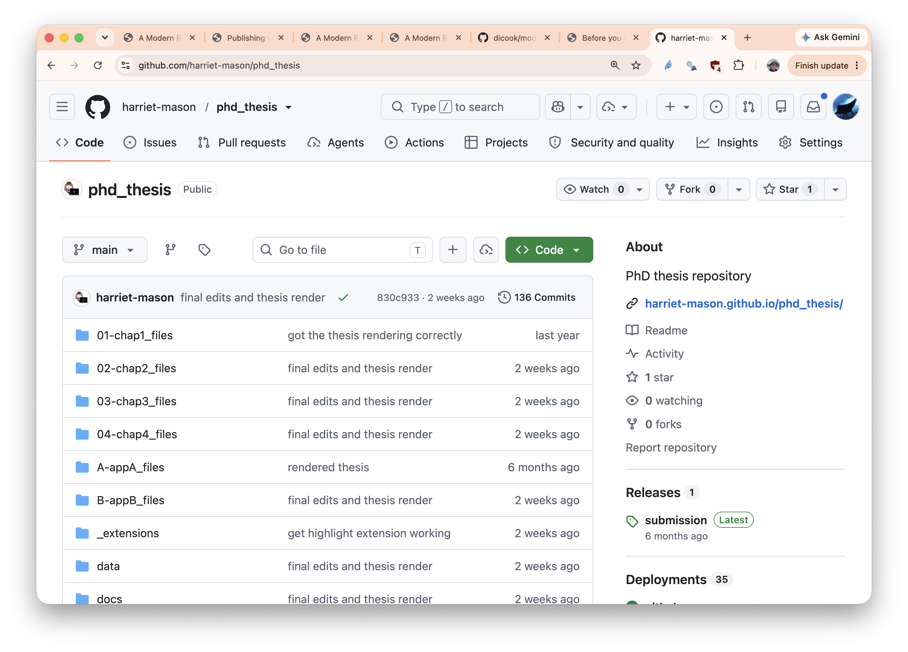
- The work is version controlled. We can always backtrack, obtain previous versions, map out the different directions a project takes
- Advisors can easily see and check work regularly
- Advisors can actively collaborate
- If the student’s computer has problems, the work is preserved
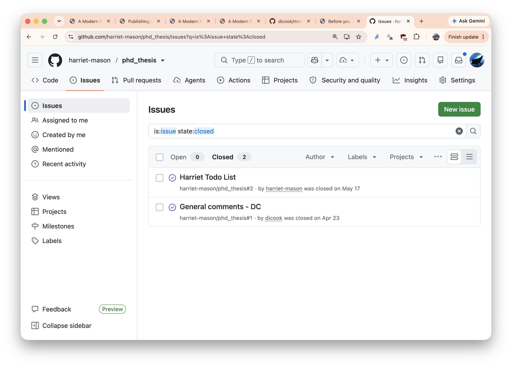
- Feedback can be provided by posting an issue, which stays visible until actively closed
- Changes can be made directly
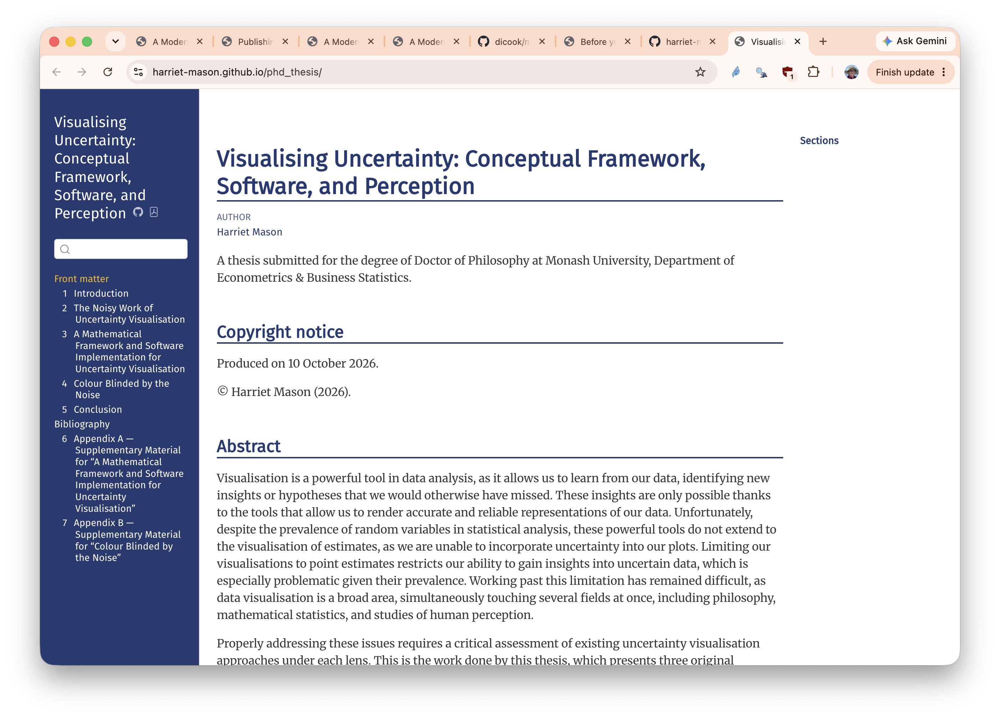
Content like a thesis can also be shared as HTML on a website, in addition to PDF for submission.
Check it yourself by visiting https://harriet-mason.github.io/phd_thesis/.
Managing teaching materials
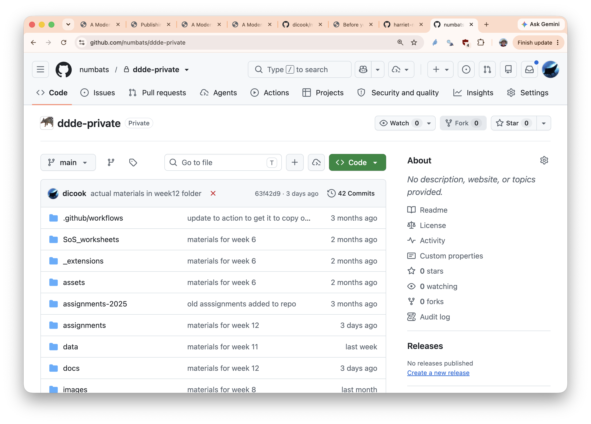
- These are the materials for ETC5521 Diving Deeper into Data Exploration.
- They are stored in an organisation,
numbats, so if the instructor changes, materials are still available - All class materials are version controlled, except student marks
- Actively choose what is publicly provided to students
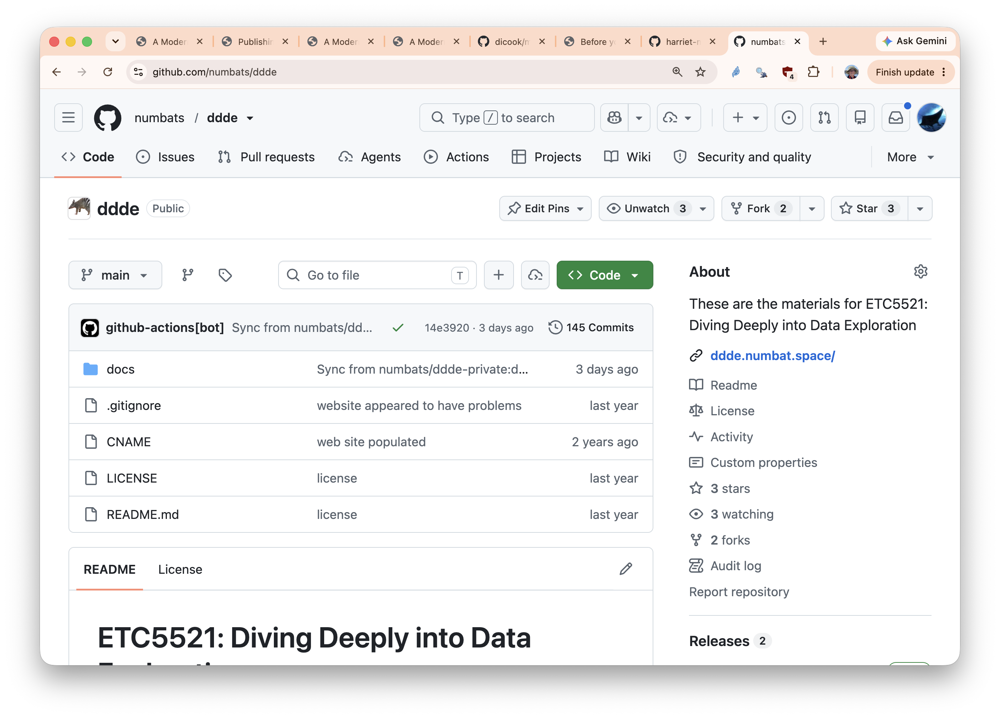
- These are the materials that are provided to students
- It is publicly available, so a licence is shown
- Changes to delivered materials are version controlled, and typically scripted, so that you can see and digest these changes.
- Errors, or omissions, can even be fixed during a class!
- Demonstrates good data practice to students
- All of the materials are produced using Quarto: slides, assignments, website
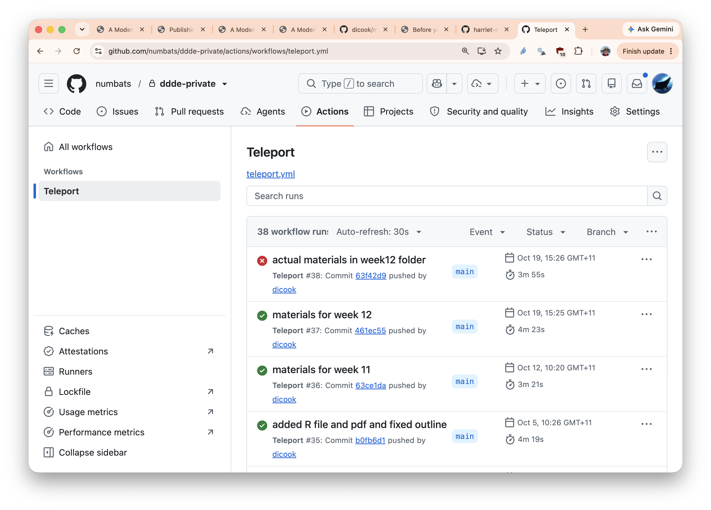
- Materials are transferred to the public repo automatically upon a push to the private repo
- The GitHub Action is called Teleport, written by my colleague Michael Lydeamore
- Class website is in the
docsfolder which is the material transferred between repos - Need to render it locally first (well, I do, so I can check it before pushing to the repo)
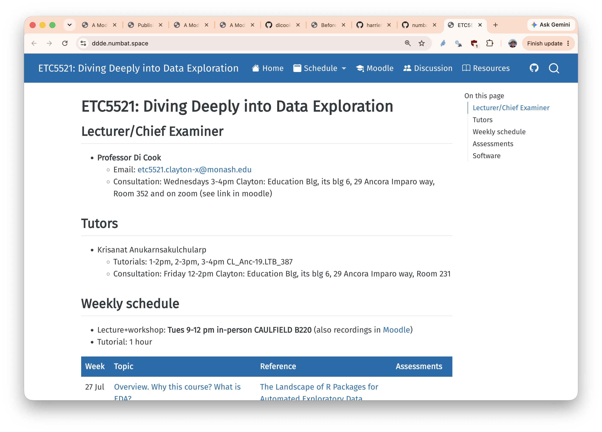
- Website is deployed by GitHub Pages
- Automatically happens when materials are transferred
Delivering presentations
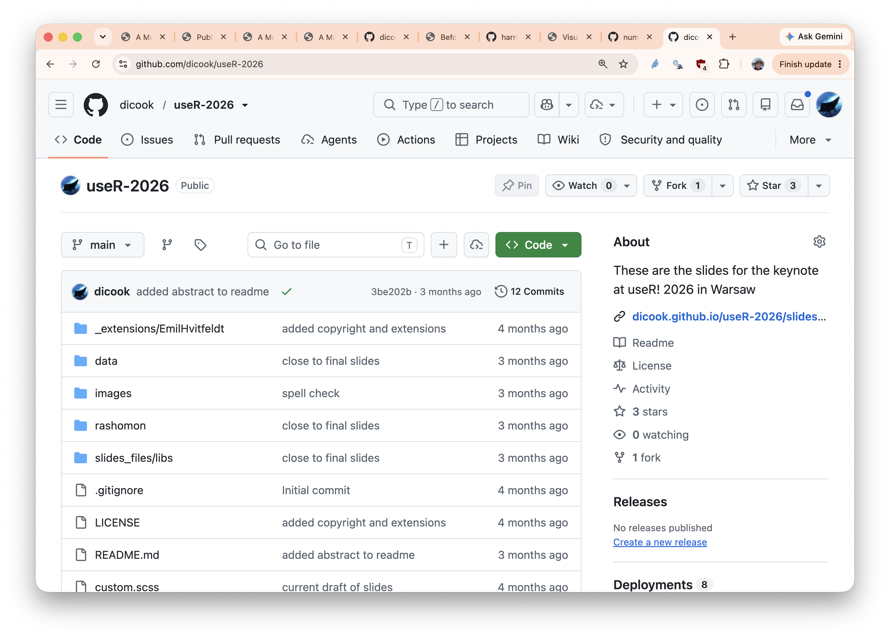
- Much simpler than the last two!
- Create slides, push to repo
- Add the GitHub Pages deploy
- Make link on the
Aboutsection pointing to the actualslides.htmlfile
See https://github.com/dicook/useR-2026 as an example.
What you need open
- Your chosen IDE: RStudio or Positron
- GitHub Desktop, signed in to your GitHub account
- A browser tab at github.com
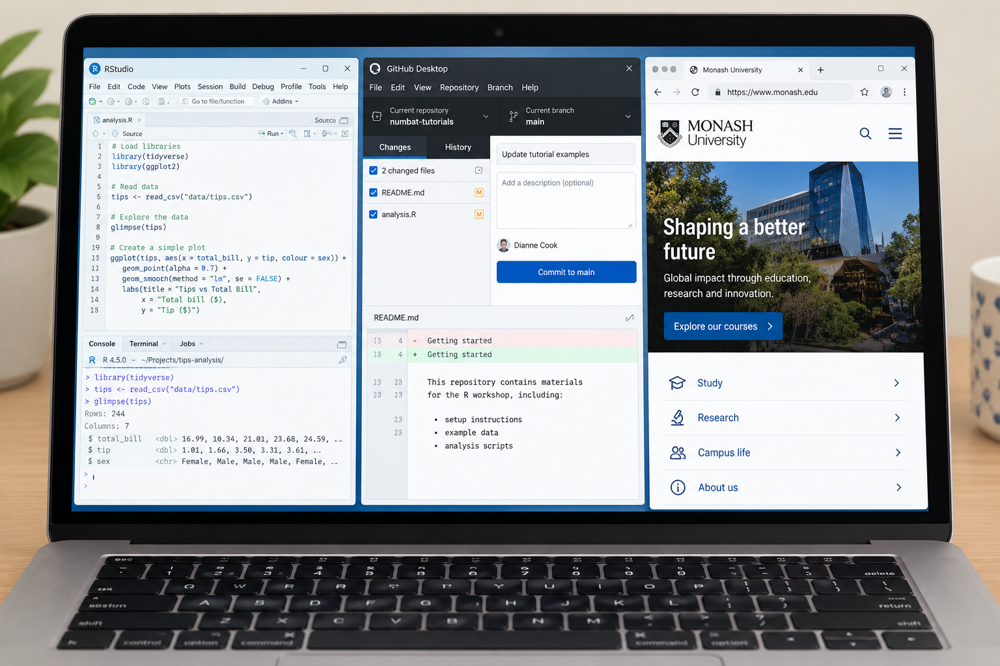
Structuring a research project
A project is a folder others can open
Example structure
my-project/
├── README.md
├── data/
├── scripts/
├── figures/
└── paper.qmdFuture you is your first collaborator.
Four habits to follow:
- folders: one home for each kind of file, like code, images, data.
- naming: lowercase, no spaces, dates as
2026-10-19 - README: what it is, how to run it, who to ask, how to contribute (if public)
- relative paths: no
setwd()orC:/Users/...
Relative paths with here
Git basics
The four verbs
commit
Save a snapshot with a message
push
Send commits to GitHub
pull
Fetch collaborators’ changes
Good commit messages say why: “Added plot of the missing values”.
Create repository
In GitHub Desktop
File > New Repository, named shared-project
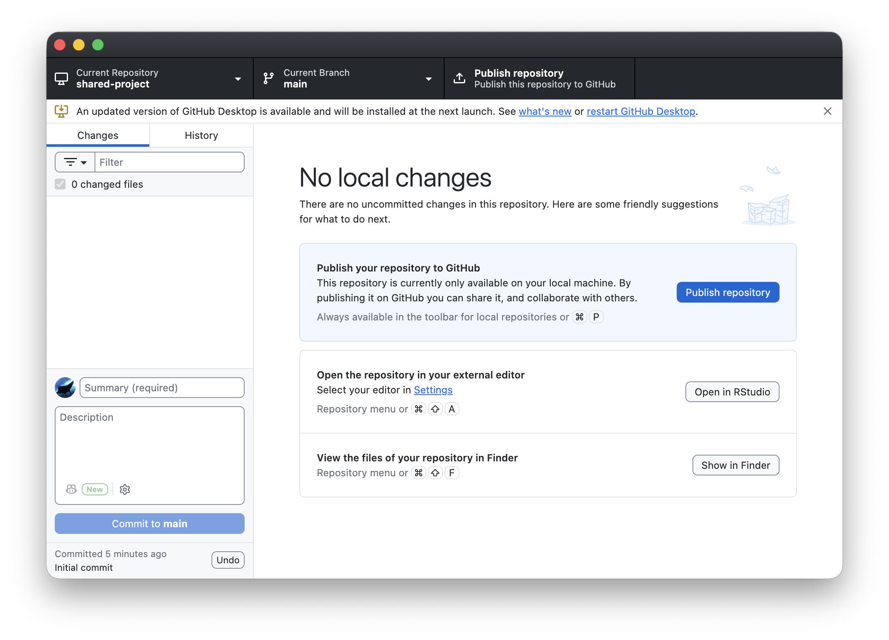
Build a project skeleton
Do this in your IDE R Console.
If you are using RStudio, you need to create a new project (File > New Project) called shared-project
- Run the code below inside it
- Open
README.mdand write two lines: what the project is, and how to run it
Empty folders are not tracked by Git. So the next step is to create some data and a code file.
- Using your IDE, New File, R File, save it into the
scriptsfolder ascode.R - Add the code below to this file
- Run the code to generate a data file
First commit
In GitHub Desktop
- In the
shared-project, notice the files that should be pushed to the repo (data,scripts,README.md,shared-project.Rproj); they should be visible on the left of the window - Write a commit message, and Commit, then Push
- Publish repository (keep it private for now)
Share a project with a partner
Steps
- Owner: on GitHub, open Settings > Collaborators and invite your partner
- Partner: accept the invitation, then Clone the repository in GitHub Desktop
- Both: edit different lines of
README.md, commit, and push - Pull each other’s work. If the same line was edited, resolve the conflict together
- Partner: create a branch, change something, push, and open a pull request; owner reviews and merges
- Either: open an issue listing two next steps, and assign it
Every time
Every time you start to work, open GitHub Desktop.
Click on the Fetch origin tab.
If there are changes, you will be asked to Pull origin.
Do it! It brings the changes to your laptop.
Merge conflicts, issues, pull requests, branches and releases
Merge conflicts
Mostly changes are merged automatically by Git.
Merge conflicts happen when collaborators work on the same part of the project and make contradictory changes, so it is not clear to Git which change should be made.
These need to be resolved manually.
Avoiding conflicts
- Commit and push your changes frequently
- Binary files, like the output
pdffiles generated byqmdmay cause conflicts. It’s safe to ignore these because the file is regenerated at will.
Fix a merge conflict
Create and fix a conflict
- Have your partner clone a copy of your repo, using File > Clone Repository
- You each edit the README.
- Have your partner push their change.
- Commit your change, and pull.
- Fix the conflict, commit and push your version to the repo.
Issues, pull requests, branches
Issues
On your own repo, map out to-dos, provide suggestions, allocate tasks.
On someone else’s repo, record a task, bug or idea. Assign it, discuss it, close it.
Branches
Primarily for large projects, where main needs to be kept clean and working. New development happens on the branch.
Pull requests
Merge changes from a branch.
On someone else’s repo, provide a fix for them to review and merge.
A local copy can pull and push to a branch.
Common pitfalls
Large files and GitHub
- 50 MB: GitHub warns you
- 100 MB: push is blocked,
.gitignoreis a friend - Deleting a file later does not remove it from history
- README or script: how to download a large data file stored elsewhere
- Use Git LFS if you must version big files - it’s not free.
If you accidentally commit a mistake
Reverting a commit adds a new commit that undoes the old one, so history stays honest. For uncommitted changes, right-click the file and choose Discard changes.
Nothing committed is ever really lost. You can see the mistake and the fix side by side in the GitHub Desktop History tab.
Resources
There are many ways to access GitHub from your laptop: command line, through your IDE, GitKraken, and more, and there are many more complexities that could be harnessed. Most of our research projects only require minimal knowledge.
- Learn GitHub within GitHub: free hands-on lessons
- Happy Git with R
- Learn what is happening under the hood
End of session 1
After the break: writing papers and slides with Quarto, and sharing your code.

This work is licensed under a Creative Commons Attribution-NonCommercial-ShareAlike 4.0 International License.